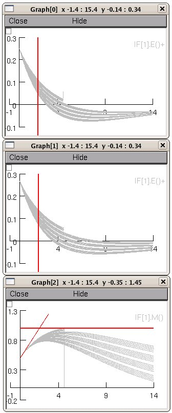

This is the readme for the model associated with the paper: R.A.J. van Elburg and A. van Ooyen, `Generalization of the event-based Carnevale-Hines integration scheme for integrate-and-fire models', Neural Computation, July 2009, Vol. 21, No. 7: 1913-1930. (doi:10.1162/neco.2009.07-08-815 ) Files: Actual implementation of the generalized IntFire4 mechanism, called IntFire4r: intfire4r.mod Hoc-file defining a network of IntFire4r cells: IF4rNetwork.hoc Session files bringing up a little GUI for plotting model behavior in 4 different initial conditions: IF4rFigures.hoc Execution: After compilation of intfire4r.mod (mknrndll with PC and MAC, nrnivmodl under linux) run IF4rFigures.hoc in NEURON. This will load intfire4r cells and bring up a panel with four choices ++,+-,-+,-- and three graphs. The first+/- indicates whether the model starts with a positive (+) or negative (-) dm/dt, the second +/- indicates whether the model starts above (+) or below (-) m=0. The graphs show the currents e (E), i2 (I) and the membrane potential m (M). For example running "++" will generate figures such as: 